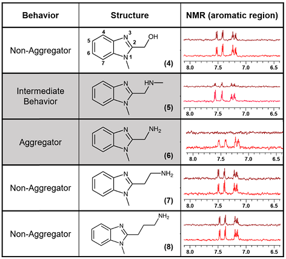
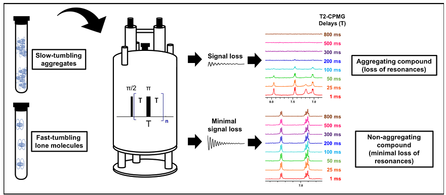

Evaluating Ligand Solution Behavior
(Minimizing False Positives in Binding Assays)
While some will read the following and say that it is "obvious!",
I have personally seen enough cases where the points discussed below
were not "obvious" nor "trivial" and have seen the impact that ignoring
them has on data interpretations in early stage drug discovery
programs. Furthermore, few can presume to have a complete grasp of the
complexity of solute behavior in aqueous solution (I am no exception,
but have worked extensively on this topic, both academically and
industrially).
In the following writeup, however, I do hope to shed some light on some
neglected points that have a big impact on interpretations and outcomes
of biophysical and biochemical assays.
So we begin...
Arguably, one of the most important things to consider when evaluating ligand binding to a drug target (protein or nucleic acid) is to understand how the compound (drug, ligand) behaves in solution.
Failure to do so will unequivocally result in a higher number of false
positives, confusing structure-activity-relationships (SAR), and
ultimately wasted resources.
Having tested 1000s of compounds for solution behavior for both
internal and external clients (usually for medicinal chemistry and drug
development programs), it is clear that there are more than a few
underappreciated points regarding how a compound's solution properties
can impact biophysical and biochemical assays (and thus drug discovery
effiorts)
Take the following example, where related analogs exhibit vastly different solution behaviors:

Figure 1. Series of
structurally related N-methyl benzimidazole core compounds with
differing propensities for aggregation in aqueous buffer.
Perceptions of the relative importance of these physicochemical
properties varies greatly among the scientific community but the
following is undoubdetly clear:
a) there is a vast underappreciation for the complexity of solute/drug/ligand solution behavior, and
b) even more neglected is how such complexity impacts functional and
biophysical assays that are performed on a daily basis in labs,
globally.
So, what then are the important points?
They are as follows:
1. Solution behavior is much more than "solubility" (e.g. solubility in mg/mL is only one of many parameters that should be considered)
2. Aggregation ≠ poor solubility
(There is a difference between "aggregation" and "precipitation").
Precipitation implies some form of aggregation, but the converse is not
true.
3. Soluble aggregates exist! Furthermore, they are common causes of false-positives
4. Proteins and other binding partners can act like detergents and de-aggregate aggregated compounds
5. There are numerous types of drug (compound) aggregates with variations in: size, stability, equilibria, kinetics.
6. DLS and particle size measurements are not sufficient for aggregate detection and characterization!
7. Some aggregates are colloidal
suspensions, others are soluble, and many are small and transiently
formed (having varying degrees of stability).
8. Detergents often do not "break" all aggregates.
In fact, few detergents are actually sufficient for complete
"de-aggregation" and detergents have varying strengths for
de-aggregation propensity.
9. Aggregation, solubility, and solution behavior of a solute is buffer dependent!
A solute will behave differently depending on the choice of buffer: Phosphate, Tris, Hepes, MES, Borate, Bis-Tris, etc. You
cannot ("safely") assume that affinity measurements and binding results
for an assay performed under one set of solution conditions will
replicate in another assay performed under different conditions (even
if the conditions are quite similar)! Everyone does it; but if you love SAR, stop doing this.
A good example is when Kd measurements are compared between different
biophysical methods (SPR, NMR, ITC, MST) and the solution conditions
are different (variable amounts of detergent, Tris vs Hepes buffer,
differing salt concentration, different concentration of DMSO, etc).
Then there are surprised looks when the results are different...
Controlling for the solution condition differences often ameliorates
these discrepancies.
10. Additives are part of the buffer and have a huge impact on co-solute solution behavior
(glycerol, arginine, glycine, sorbitol, tween, etc.) If you change the
composition of a buffer with an additive, you cannot assume that the
results of a functional or biophysical assay will be the same as for a
similar buffer (same buffer -additive).
11. How you prepare your solution (ligand in buffer) may impact its solution behavior.
Do you add your solute to the buffer or buffer to the solute? Do you
dissolve your ligand in a co-solvent before adding to the buffer? Be
consistent (hard when the testing is
handled by different groups, departments, or personnel eh? and while
this might only impact a small fraction of compounds; when its a lead
or related analog we are talking about, it doesn't sound like minutia
anymore).
For those that have made it this far, you might be saying: "So what do
I do? Am I supposed to test my compound across all buffer and solution
condition variations and permutations that are done throughout a
discovery or development program?"
The answer is: Ideally yes, but in reality this is neither realistic, reasonable, nor practical.
It is almost guaranteed that at some point, a compound, drug lead, or
drug product will end up being tested in some solution (cell culture,
plasma, in vivo) that is vastly different from in vitro conditions. Does that mean we
should conclude that because at some point, control over the conditions
is lost, that we should not control for conditions at all in vitro stages? No, not at all. Doing so is a good way of spinning wheels at earlier stages of the program.
So what then?
Well... you can apply the following:
1. Set some conservative lower-limit thresholds that are well-below
what you would need across all biochemical and biophysical assays.
If you have a biochemical assay that requires titrating ligand from a
concentration of 0 uM to 1 mM and another biophysical assay that
requires testing from 0 uM to 3 mM, you should ensure that your
compound is well-behaved across that entire concentration range (0-3
mM) and perhaps even 1.5-2X above the maximal concentration (more
stringent conditions, the less likely for false positives).
2. Try (try even harder) to
use an identical buffer (same additives, same concentration, same pH,
same conductivity, same everything) for all biophysical and biochemical
assays. This one is a biggie!
3. Run your assays in triplicate.
4. Be consistent in the method of preparation for your samples.
5. Characterize the solution behavior of solutes and search for
aggregate particles in your assay buffer prior to running any
biochemical and biophysical assays. This is kind of obvious, but what
is not obvious is what methods or techniques should be used?
DLS, Nephelometry, EM, HPLC, NMR, Diffusion?
Ideally, we would have one method (technique) that could provide info
on the following parameters, and one that allows you to measure these
parameters rapidly, on the same sample, simultaneously:
1. Accurate solubility measurement (e.g. ug/mL, mg/mL)
2. Identify or detect aggregates across a large range of sizes and types
3. Detects whether a compound is undergoing chemical exchange processes
(aggregating or interacting with other species in solution)\
4. Can simultaneously evaluate purity
5. Can simultaneously evaluate structure (structure confirmation)
6. Can simultaenously evaluate stability
7. Can simultaneously identify multiple ligand conformers
8. Is sensitive across the range of concentrations that are necessary for all biophysical and biochemical assays.
9. Can directly observe at an atomic level each of the components of the system.
You all know what technique this is...
The article referenced below provides a summary of how NMR
can be used in a high-throughput manner to characterize solution
behavior of ligands. This approach allows for screening of large
compound libraries. While the article touches on some of the
points mentioned above, keep in mind that the NMR method allows you to
simultaneously monitor all parameters described in the list above. Just
ask your friendly neighborhood NMR facility manager (or me) on how to
get started - its easier than one might think.

Figure 2. Overview of the NMR method for monitoring ligand solution behavior.
References:
Ayotte Y, Marando VM, Vaillancourt L, Bouchard P, Heffron G, Coote PW, Larda ST, LaPlante SR. J Med Chem. (2019) 62(17):7885-7896.